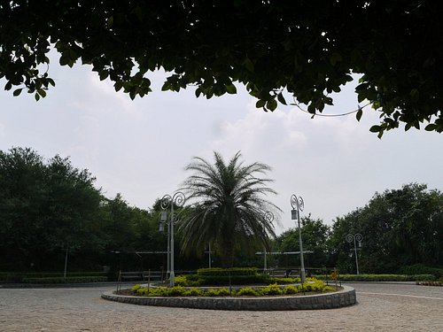

Islamabad trip
Travel Stories
Daman-e-koh

Perched high in the Margalla Hills, Daman-e-Koh's viewpoint offered a breathtaking canvas of Islamabad. One serene evening, I watched the sun dip below the horizon, painting the sky in hues of pink and gold. As the city's lights twinkled to life, a gentle breeze whispered through the trees. People gathered, each with their story, sharing laughter and solitude in this natural amphitheater.
A couple, hand in hand, gazed at the city's glittering expanse, lost in their own world. A group of friends toasted to friendship, their voices echoing across the hills. For a fleeting moment, the world's worries seemed distant. Daman-e-Koh was a reminder that in nature's embrace, we find both tranquility and connection, and in its simplicity, the greatest of joys.
Quaid-i-Azam University

Quaid-e-Azam University, nestled in the heart of Islamabad, is a place where academic excellence meets the serene beauty of the Margalla Hills. One sunny afternoon, I wandered through its lush campus, the vibrant red-bricked buildings standing as testaments to knowledge and aspiration.
Students bustled between classes, their faces a mix of determination and curiosity. As I entered the library, the silence enveloped me, broken only by the soft rustle of pages. It was a sanctuary for seekers of wisdom.
In the courtyard, I saw friends debating, sharing ideas, and forging lifelong bonds. The atmosphere was electric with intellectual fervor. Quaid-e-Azam University wasn't just a center of learning; it was a hub of dreams and possibilities.
Standing atop a hill, overlooking the sprawling campus, I marveled at how this institution had nurtured countless minds, producing leaders and visionaries who shaped Pakistan's destiny. Quaid-e-Azam University was a symbol of the nation's commitment to education, where the past, present, and future converged, leaving an indelible mark on those fortunate enough to walk its hallowed halls.
Centaurus

In the heart of Islamabad, the Centaurus Mall rose like a shimmering jewel amidst the cityscape. On a weekend morning, I entered the sleek, modern atrium, where sunlight danced through intricate glasswork. The mall's bustling energy was palpable.
Navigating through designer boutiques, I discovered a world of high fashion and luxury. It was a haven for shopaholics, where desires became reality with every purchase.
The aroma of international cuisine wafted from the fine-dining restaurants, tantalizing the senses. People from all walks of life came together, creating a tapestry of diversity as they savored their meals.
As I ventured to the rooftop, the Centaurus Tower's panoramic view of Islamabad took my breath away. The city sprawled below, and the Margalla Hills cradled it with grace.
The Centaurus was not merely a mall; it was a testament to modernity and the city's cosmopolitan spirit. It was a place where dreams and desires converged, offering an experience that touched the senses and the soul, leaving an indelible mark on all who visited.